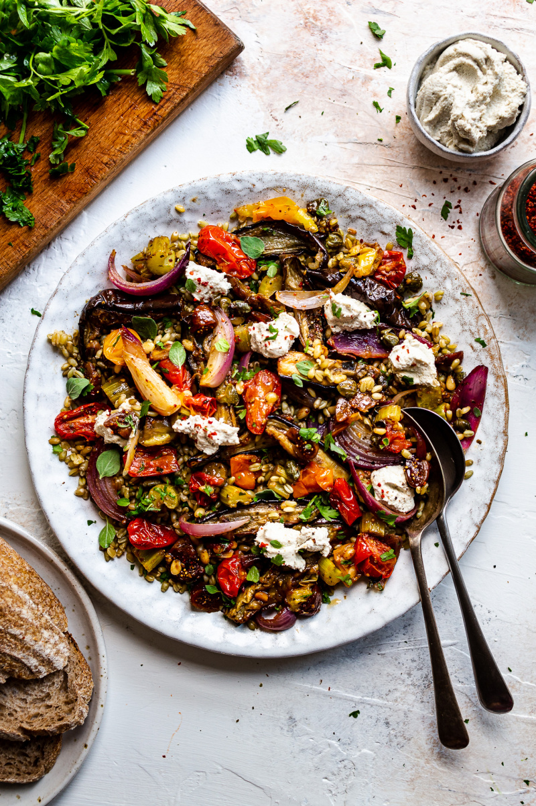

Home made Aubergine Salad
Home page
Lasagna Recipe
Curry Goat Recipe

Description
This is my famous home-made Aubergine Salad
It is a family favourite!
Ingredients
- 240 g / 1 cup farro* or small pasta (like orzo)
- 1 large (300 g / 10½ oz) aubergine / eggplant
- 1 small red onion, cut into wedges
- 1 celery stalk, thinly sliced
- 12 cherry toms, halved
- 1 tbsp capers
- 1 tbsp pine nuts
- 2 dry figs, finely chopped
- 30 ml / 2 tbsp olive oil
- 1 garlic clove, finely grated
- 1 tsp dried oregano (or marjoram)
- 1 tsp smoked paprika
- ¼-½ tsp mild chilli (like Turkish pul biber), adjust to taste (optional)
- salt and pepper, to taste
- 15 ml / 1 tbsp quality balsamic vinegar
- 10 g / 1/3 oz parsley, oregano or basil leaves, finely shredded
- Cook farro, pasta or whatever else you are using (wild rice, brown rice, Puy lentils would all work really
well) as the base according to packet instructions.
- Heat up the oven to 200° C / 390° F. Top and tail the aubergine / eggplant and cut it into half widthwise
and then into eights lengthwise.
- Then add curry, stir for about 1-2 minutes.
- Lay them on the side in a medium size* deep baking tin and prebake for 10 minutes, then turn to the other
side and carry on baking for another 10 minutes.
- Add red onion wedges, celery, cherry toms, capers, pine nuts and chopped figs to the tray. Stir olive oil
and minced garlic through. Season with dried herbs, smoked paprika, chilli (if using) and a generous amount
of salt and pepper. Return to the oven and bake for another 20 minutes, giving the vegetables a good stir
and adding balsamic vinegar halfway through.
- Plate roast vegetables on top of farro or pasta on a large plate / platter. Sprinkle with fresh herbs and
dot with vegan cheese.